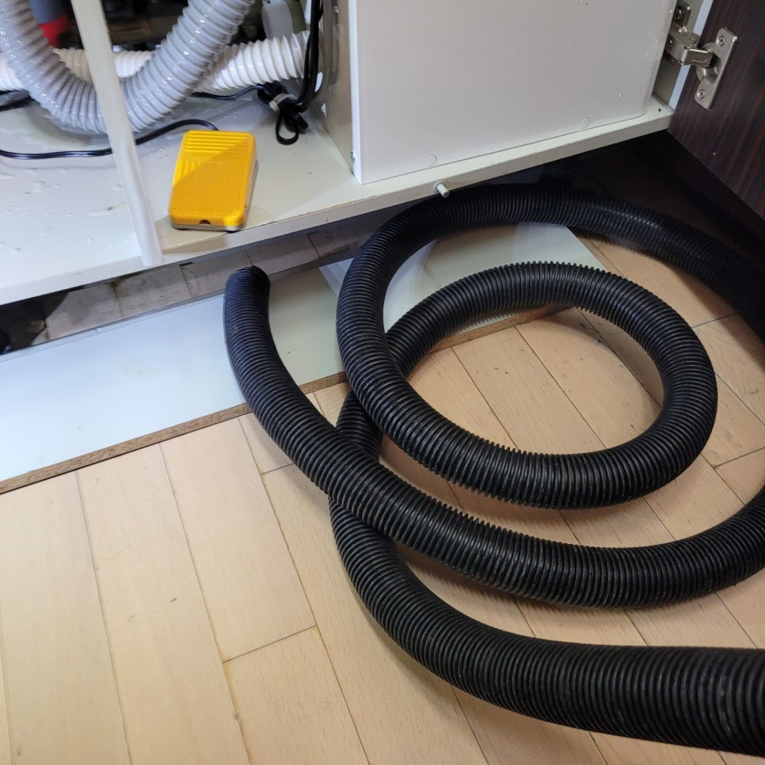
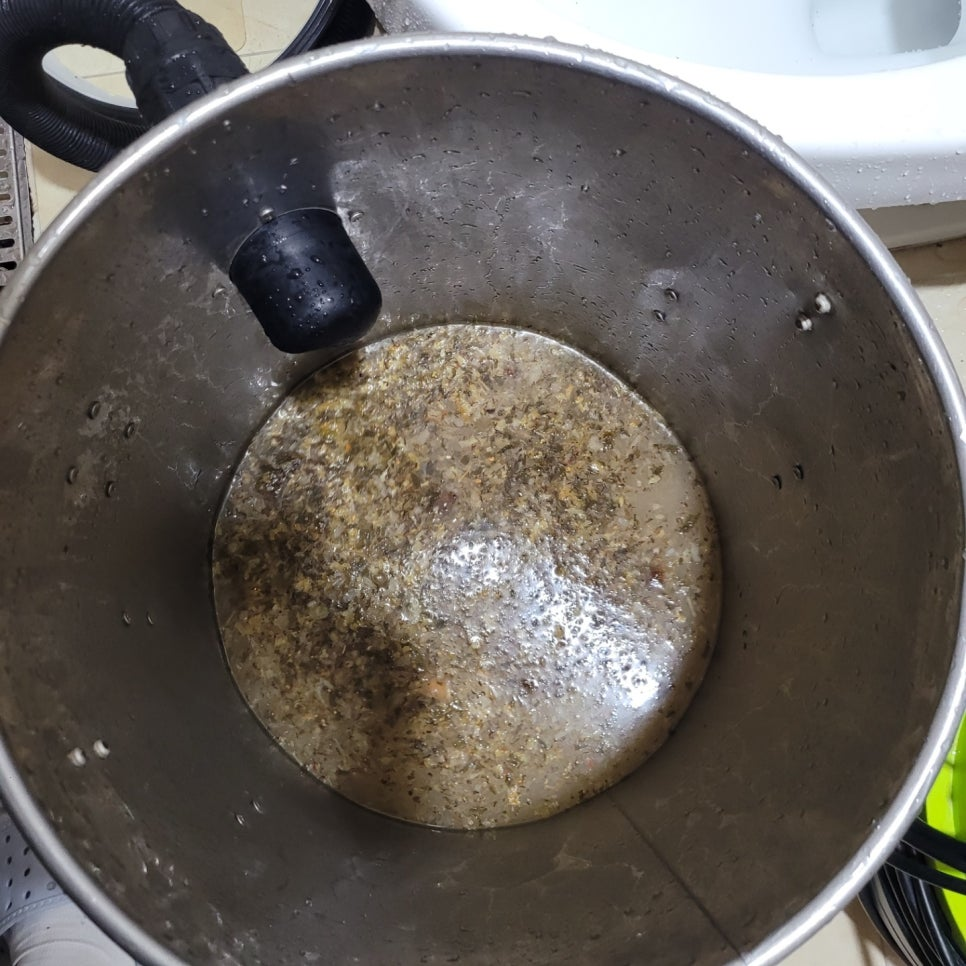
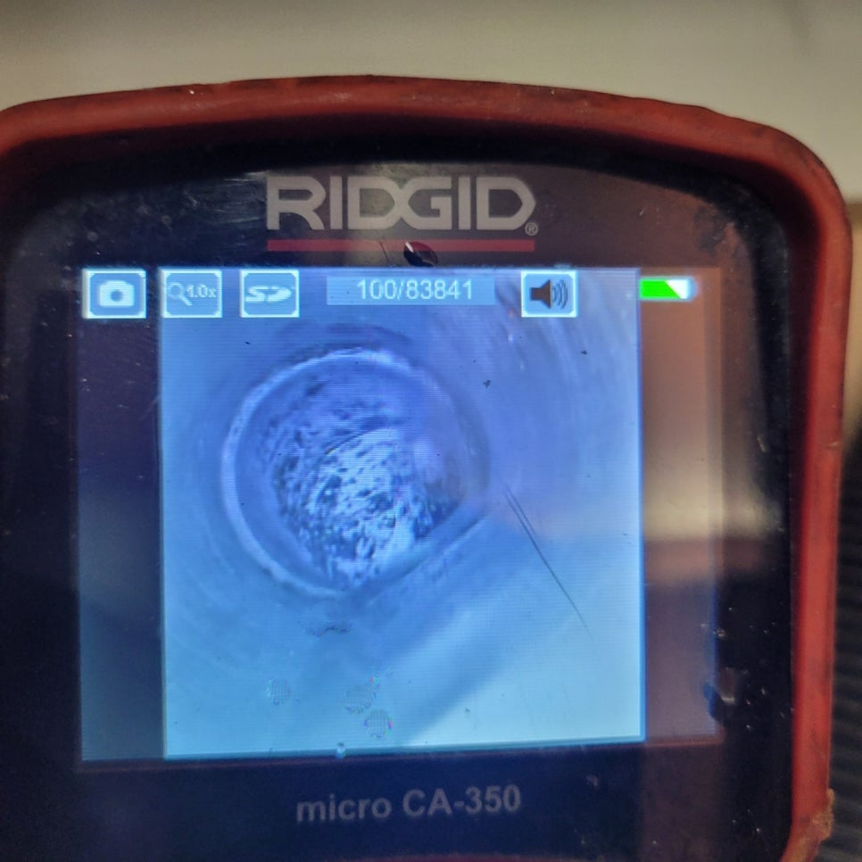
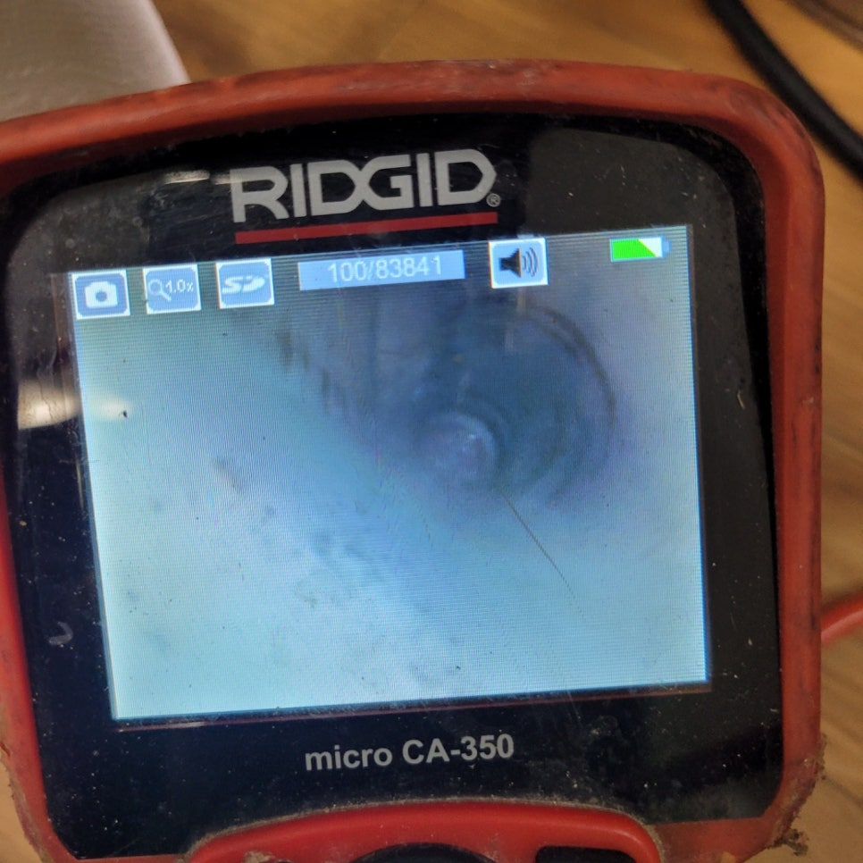

🏠 의왕시 부곡동싱크대막힘 하수구역류 빠른해결 해드려요
용인 싱크대막힘 전문 시공 후기

📋 작업 개요
- 위치: 용인
- 서비스 유형: 싱크대막힘, 하수구막힘, 배관막힘, 역류해결, 뚫는업체, 배관청소, 고압세척, 설비공사
- 작업 일시: 2023. 5. 2. 15:31
- 업체명: 하수구수사대 (010-5615-2118)
🔍 문제 상황
안녕하세요. 하수구수사대입니다.
현재 저희는 막힌 하수구나 싱크대를 시원하게 해결해 드리고 고압세척까지 진행하며 여러분의 생활의 질을 높이기 위해 노력하고 있는 업체입니다. 오늘도 많은 분들의 문의에 보답하고자 신속 정확하게 의왕시 부곡동싱크대막힘 하수구역류 빠른해결 작업을 마무리 짓고 돌아왔는데요. 사진과 함께 후기를 준비해 봤으니 지금부터 살펴보도록 하겠습니다.
하수구수사대를 찾아 주신 곳은
의왕에 위치한 가정집이었는데요. 어느 순간부터 갑자기 싱크대의 물이 시원하게 빠지지 않고 악취가 발생하는 것 같아 문제가 더 커지기 전에 전문 업체를 통한 의왕시 부곡동싱크대막힘 하수구역류 빠른해결 작업을 원하셨다고 합니다.
워낙 많은 업체들이 있다 보니 어떤 곳을 선택해야 할지 고민하던 중 친한 이웃의 소개로 저희 업체를 알게 되셨고 바로 문의를 주셨는데요. 소개를 해 주신 분이 알고 보니 이전에 저희를 통해 하수구 막힘 해결을 하셨던 고객님이시더라고요.

🔎 원인 분석
💡 전문가 진단: 하수구수사대를 찾아 주신 곳은
원활한 의사소통을 통해
일정과 필요하신 작업 내용을 확인하고 필요한 장비를 챙겨 현장에 도착했습니다. 가정집에서도 하수구 막힘 현상은 비일비재하게 일어나므로 셀프로 해결을 하고자 하시는 분들도 많으실 거라 예상이 됩니다.
하지만 작업 과정에서 작은 실수 하나만으로도 대공사가 필요할 정도로 배관에 훼손이 될 경우 추가적인 비용과 시간이 필요하므로 처음부터 믿을 만한 업체를 통해 안전한 의왕시 부곡동싱크대막힘 하수구역류 빠른해결 작업이 이루어지는 것을 권장 드리고 싶습니다.
이미 악취까지 발생된 상황이었기에 보다 빠르고 정확한 작업이 필요했죠. 바닥 배수구가 막힌 상태로 방치하게 될 경우 물이 역류하면서 악취가 발생하곤 합니다. 가스 또한 올라오기 때문에 호흡기에도 좋지 않은 영향을 주어 빠른 해결 작업이 필요하며 상가와 같은 곳에서는 주기적인 검사를 진행하기도 하죠.
가끔 셀프로 해결을 하고자 락스와 같은 화학약품을 사용하는 분들도 계시지만 이러한 조치는 올바르지 않으며 오히려 그 약품들이 역류하면 더 심한 악취를 풍기게 되니 주의 바랍니다.

🔧 작업 과정
내시경 카메라를 통해
역류가 시작되고 있는 싱크대 안쪽의 배관 상태를 살펴보았습니다. 먼저 역류 되는 물의 양이 꽤 많았기에 석션기를 사용해 흡입하며 작업 환경을 정돈했습니다. 이후 오물의 양이 꽤 많아 플렉스 샤프트를 통해 원인이 되는 이물질들을 하나씩 체계적으로 제거하기 시작했는데요.
이물질이 제거되면서 역류까지 이루어졌던 싱크대 막힘 문제가 해결되고 있었습니다. 장비를 통해 이물질을 제거하고 중간중간 빠진 부분은 없는지 확인하기 위해 다시금 내시경 카메라를 내려 꼼꼼한 제거 작업이 이루어집니다.
이것을 반복하다 보니 꽉 막혀 있던 싱크대 하수구가 뻥 뚫리는 것을 확인할 수 있었는데요. 셀프로 해결을 해볼까 잠시나마 고민을 했던 시간이 아까울 정도로 너무 안전하고 완벽하게 의왕시 부곡동싱크대막힘 하수구역류 빠른해결 작업이 이루어진 것 같으시다며 의뢰자분께서 굉장히 만족해하셨습니다.
모든 작업이 마무리된 후에는 직접 물을 틀어 제대로 내려가는지 배관의 모습을 또 한 번 확인하는 단계를 거치게 됩니다. 의뢰자 분과 함께 시원하게 뚫린 배관의 모습을 확인하고 물이 제대로 내려가는 것까지 완벽한 확인을 마친 뒤 작업 도중 발생된 이물질과 물기, 등을 모두 제거하고 뒷정리까지 진행해 드렸는데요.
저희가 다녀간 자리는 저희가 책임지고 깔끔하게 청소해 드리고 있는 하수구수사대입니다. 싱크대 하수구 막힘의 경우 배관의 상태가 좋지 않다면 이것을 뜯어내고 작업이 이루어지기 때문에 부담이 될 정도의 비용과 시간이 필요하게 됩니다. 무엇이든지 최대한 빠른 발견과 해결이 중요하다는 사실 모두 알고 계시죠?
하수구수사대는 10년 이상 된 노하우를 보유하고 있는 전문가들이 직접 현장에 투입되어 모든 작업이 이루어지므로 매번 신속 정확한 원인 파악과 그에 따른 해결 작업이 가능합니다.
곧 다가올 여름에는 싱크대가 막힐 경우 더 심한 악취와 온갖 벌레들도 생겨나기 마련인데요. 싱크대 배관이 아예 막혀버리기 전에 고민하지 마시고 하수구수사대를 찾아주세요.


✅ 작업 완료
늘 친절하고 전문적인 상담과 완성도 높은 해결 작업까지
진행해 드리도록 하겠습니다.




⚠️ 주방 싱크대 배관 막힘 예방 수칙
- ✅ 기름기가 묻은 식기나 프라이팬은 설거지 전 키친타올로 반드시 기름때를 닦아내세요.
- ✅ 주기적으로 싱크대 개수대에 뜨거운 물을 가득 받아 한 번에 내려 배관 내부 기름을 씻어내세요.
- ✅ 배수구 거름망을 미세한 필터로 사용하시고 음식물 찌꺼기가 틈으로 새어 들지 않게 관리하세요.
- ✅ 베이킹소다와 식초를 뜨거운 물과 함께 일주일에 한 번씩 부어주면 배관 살균과 막힘 예방에 좋습니다.
💡 핵심 정리
- 확실한 장비 작업(내시경 점검 및 샤프트 스케일링)으로 원인을 뿌리 뽑습니다.
- 작업 후 1년 이내에 동일한 부위 재발 시 100% 무상 A/S 서비스를 보장합니다.
- 서울 · 경기 · 인천 전 지역에 24시간 언제든 긴급 출동할 수 있도록 항시 대기 중입니다.
❓ 자주 묻는 질문 (FAQ)
🚨 용인 싱크대막힘 문제로 고민이신가요?
정확한 원인 진단과 확실한 시공으로 재발 없는 해결을 약속드립니다.
24시간 긴급 출동 | 서울 · 경기 · 인천 전지역 | 1년 내 재발 시 무상 A/S